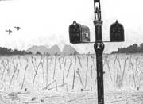
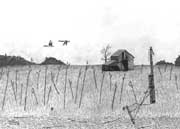
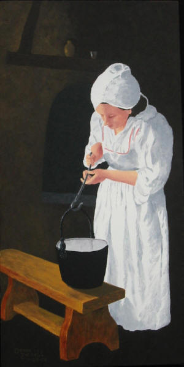
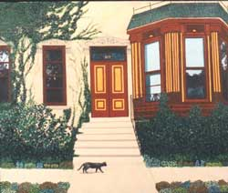
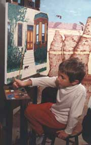
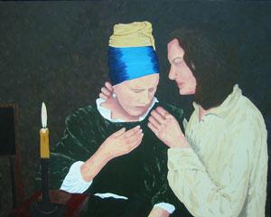

|
|
Both a home or office should be a place with
visual comfort and interest. A custom triptych as a
“study in black and white” was a successful
appointment to a living room decorated in black,
white and gray. See the three oil paintings in this
home-owner’s triptych below. Each painting is 18” x
24” and forms a continuous scene.
|
Windmill
|

Mailboxes
|

Dodge in Barn
|
Collection of Mr. and Mrs. R. Gustafson (Illinois)
|
 |
Diligence
24 in. x 12 in.
Historically, many young women have been lovingly
taught different and important skills by their
mother and grandmother. This led to gaining the
valuable traits of self confidence and self
sufficiency. The total experience is then rewarded
with the time valued attribute of diligence.
|

817 Wolfram Street
22 in. x 24 in.
Collection of Mr. & Mrs. M. Baker
(Pennsylvania)
The picture, above, hangs in my daughter’s home. It adds an
accent of color alongside their antique and contemporary
furnishings.
|
|

My grandson, David, helped "plant" some of the
flowers from my pallet of oil paints. Such
participation can make a painting a treasured family
work of art. David's initials accompany my
signature. |
Morning Chore 30 in. x 48 in.
Collection of Mr. & Mrs. S. Lawton (Texas)
Contact the artist if you are interested in a
fine art 28 in. x 40 in. digital print reproduction. |
|
This painting was worked from a pencil sketch by
an elementary student in the Riff Valley Academy in
Kenya, Africa. I have brought striking colors into
this painting, and it shows well as an interior
decorating fine art piece. The original painting is
sold. But this picture is available as a limited
edition, accurately reproduced by digital printing
on archival paper with paint and measures 28 in. x
40 in. I number, title and sign each print with an
artist pencil. You may buy the paper print and frame
it yourself, or I can provide that service. In
either case the final print should be professionally
matted and mounted behind non-reflective glass to achieve
the best showing |

Memories from Carriage Road
18 in. x 24 in.
Collection of John and Kathy Ormerod
(S. Carolina) |
Memories from Carriage Road
This painting was made for a couple who
retired to an eastern state. Among the
favorite features of their Illinois home were the
patio and gardens. This painting will preserve the
memories of happy years in this house.
|

Mrs. V's Pearls
24" x 30" oil on canvas
Artist's Collection
|
The inspiration for Mrs. V's Pearls results from three of Donn’s compounding experiences:
seeing the oil
painting by Vermeer’s titled Girl with a pearl
earring in Amsterdam, reading a biography about
Vermeer, and seeing the excellent movie Girl with a
Pearl Earring. There was a good amount of intrigue
and jealousy with the means by which Vermeer
borrowed his wife’s pearl earrings so the hired
chore maiden could wear them as she secretly modeled
for his painting, which became famous. |

Galleries | Meet the Artist | Art
Awards |
Contact | Large Art Gallery
|
New Gallery
Plains Gallery
| West Gallery
|
East Gallery
|
Bible Text Art
|
Homemaker Art
|
Mentor's Art
Copyright © 2006 Yur Art. All
rights reserved. |